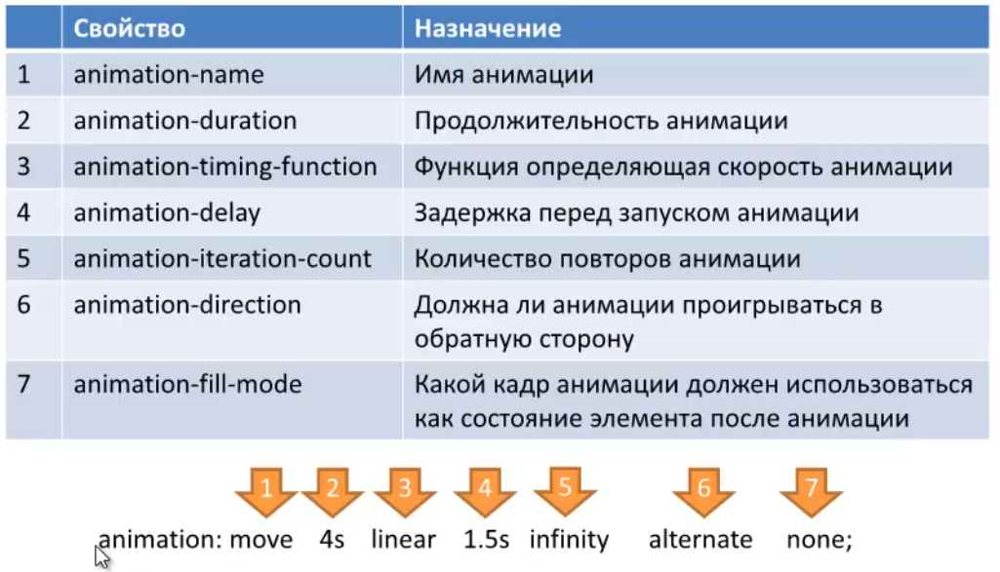

Hover pointer here.
Transition explanation image.
Hover pointer here. ease-in speed.
Transformation hints
translateX, translateY, translateZ, rotateX, rotateY, rotateZ
Animation hints

-webkit-animation: moveLeft 3s 3 alternate;
-webkit-animation-fill-mode: forwards;
-webkit-animation: moveCircle 3s infinite;
Original
grayscale (100%)
grayscale(50%)
sepia(100%)
sepia(100%) grayscale(50%)
saturate(3)
blur(2px)
contrast(200%)
brightness(2)
hue-rotate(270deg)
invert(100%)
opacity(0.5)